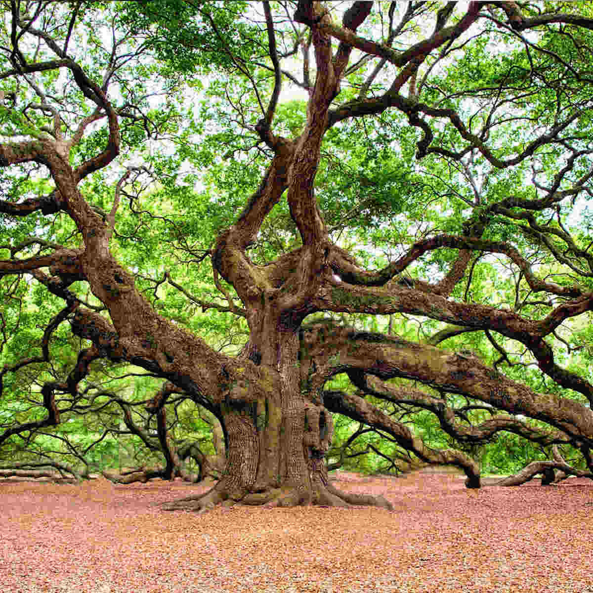
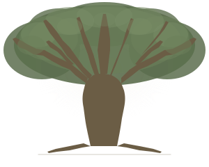
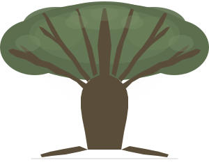
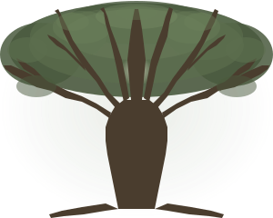

Thick muscular limbs with angular zigzag branching. Dense lush canopy. Bold, grounded, safe.

Wide horizontal sweep, gnarled zigzag limbs
Thick branches radiating out, light through the canopy

Full tree with dense canopy behind the branches. Thick filled limbs with angular direction changes at each node. Wide horizontal reach. The branches are substantial shapes, not thin strokes.
AngularBoldFull tree
Heavier version. Thicker limbs, more dramatic zigzag nodes, denser canopy mass. Darker trunk wood. The most imposing of the three — feels ancient and immovable.
HeavyDenseCommanding
Same bold angular branching but with a sunburst glow through the center canopy — inspired by the looking-up reference. Cathedral feeling. The light gives it warmth and openness despite the heavy structure.
CathedralWarm lightOpen